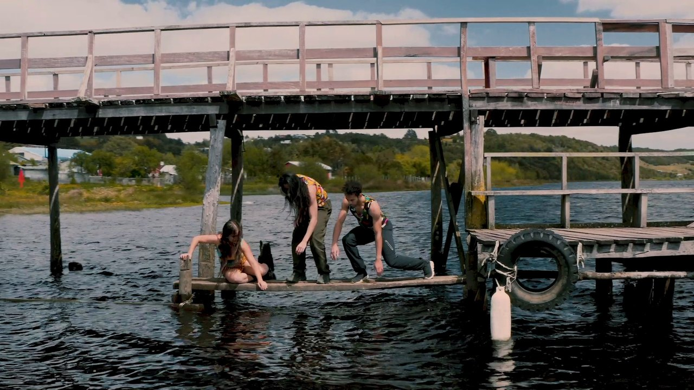

Official SelectionCine y Derechos HumanosBarcelonaOfficial SelectionInShadowLisboaOfficial SelectionMexico City VideodanceTrailer
Official SelectionCine y Derechos HumanosBarcelonaOfficial SelectionInShadowLisboaOfficial SelectionMexico City VideodanceTrailerThe Heart Is Not a Bomb
El corazón no es una bomba
Eine Gruppe Rebellen durchquert das Gebäude des chilenischen Kulturministeriums, während die frühere Ministerin Paulina Urrutia über die Rolle der Kunst in der Gesellschaft nachdenkt: Kunst ermögliche es uns, uns selbst zu erkennen und eine starke innere Kraft zu wecken, die die Wirklichkeit verändern kann.
2025Dauer: 14:44Dokumentarfilm — Essay — Tanz
- Drehbuch & Regie
- Felipe Díaz Galarce
- Ausführende Produktion
- Felipe Díaz Galarce
- Koproduktion
- dEUSeXmACHINAfilms und CENTEX, das Kulturzentrum des chilenischen Ministeriums für Kulturen, Künste und Kulturerbe.
- Produktion
- David Legue / Cristóbal Racordon Veliz (CENTEX)
- Choreografische Leitung
- David Legue
- Erzählstimme
- Paulina Urrutia
- Besetzung
- Josefa Torres, Diego Clark Rojas, Alejandra Parga, Milca Galea Robles, Blanche Brunel, Anette Barraza Mena, Vanessa Bravo Espinoza, Nicole Ignacia, Lorena Núñez-Parra, Nicol Sánchez Santis, Mauricio Lagos Morales, Isidora Pizarro Torres, Seba Gaytán, Camila Henríquez Hurtubia, Montserrat Salas Acevedo, Javiera Rosas, Bgirl-Marche, Abril Cáceres Guzmán.
- Bildgestaltung & Kamera
- Felipe Díaz Galarce
- Drohne
- Kev thomas, Felipe Díaz Galarce
- Zusätzliche Kamera
- Aníbal Aravena
- Bild-Postproduktion
- dEUSeXmACHINAfilms
- Schnitt
- Felipe Díaz Galarce, David Legue
- Musik
- César Bernal (contrabajo), Luciano Laterra (piano), Méniére (electrónica), Javier Kurten (electrónica), Pablo Rivera (batería grabada por Rodrigo Pardo)
- Ton-Postproduktion
- Fábrica del Ruido Records
- Dank an
- Rocío Rivera Marchevsky, Sarah Stachova, Daniel Benítez, Cristian González, Miguel Alvayay, Juan Díaz Figueroa.
 Jetzt ansehen
Jetzt ansehenExplorers of La Redonda
Exploradores de la Redonda
Im kleinen Ort Puerto Octay im Süden Chiles beginnen die Kinder der Schule La Redonda jeden Morgen mit einer Meditation. Ihre Lust, spielerisch und mit Fantasie zu lernen, führt sie dazu, einen Zaubertrank zu brauen, der sie in ein Naturschutzgebiet versetzt.
2025Dauer: 09:06Dokumentarfilm — Experimentell
- Koproduziert von
- La Redonda und dEUSeXmACHINAfilms.
- Regie, Drehbuch, Kamera & Schnitt
- Felipe Díaz Galarce.
- Produktion
- Magdalena Ibañez & Felipe Díaz Galarce
- Associate Producer
- David Órdenes
- Kinder
- Alina Browne Ibañez, Leonor Salinas Casas, Loenora Ordenes Nuñez, Mailén García Hechtle, Pedro Villalobos Campos, Lyra Leuba Potdar, Matilda Herrera Herrera, Emma Herrera Herrera, Diego Salinas Casas, Amalia Browne Ibañez, Antonia Ordenes Nuñez, Florencia Paredes Concha, Trinidad Villalobos Campos, Olmo Giraud Acuña, Lila Roo & Jack (dog)
- Begleitung
- Natalia Casas Aguirre, Pablo Salinas Olivares, Magdalena Ibañez Bulnes, Francisca Siebert Hechenleitner, Francisco Pauner Díaz, Pilar Rojas Gaete, Cata Said & David Ordenes.
- Transport
- Magdalena Montenegro.
- Übersetzung & Untertitel
- Iván Stevens.
- Dank an
- Familia Carromatto
 Mention · ChoreographyMovimiento AudiovisualOfficial SelectionMax SirOfficial SelectionBridgesDynamitExperienceOfficial SelectionCuerpo DigitalBoliviaJetzt ansehen
Mention · ChoreographyMovimiento AudiovisualOfficial SelectionMax SirOfficial SelectionBridgesDynamitExperienceOfficial SelectionCuerpo DigitalBoliviaJetzt ansehenTo Dwell
Morar
MORAR ist eine Einladung zu bleiben, zu verweilen und das, was bereits geschieht, durch uns hindurchgehen zu lassen. Wir lassen uns vom Heiligen bewegen, von der flüsternden Stille des Geheimnisses – und dann taucht die Frage auf: Wie groß ist der Abstand zwischen der Natur und uns? Gibt es ihn überhaupt?…
Ein Tanz als Opfergabe, entstanden durch, mit und für La Peña, ein Naturschutzgebiet an der südlichen Pazifikküste. Eine Begegnung von Frauen, die alles entdecken, was sie umgibt.
2023Dauer: 07:53Tanzdokumentarischer Essayfilm
- Regie, Kamera & Schnitt
- Felipe Díaz Galarce
- Choreografie
- Simona Luna Lanza
- Drehbuch
- Simona Luna Lanza & Felipe Díaz Galarce
- Besetzung (Tanz, Text & Stimmen)
- Simona Luna Lanza, Shamira Sanhueza Sanhueza, Valentina Balart Marmolejo, Fernanda Flores Guzmán, Paulina Solita Bianchi Valdés, Natalia Crispi Galleguillos, Thayna Olave, Maria Eugenia Lagos García-Burr
- Color Grading & Ton
- dEUSeXmACHINAfilms
- Drohne
- Kev Tomas
- Musik
- Elías André
- Ausführende Produktion
- Felipe Díaz Galarce & Alejandra Canales
- Dank an
- Rocío Rivera Marchevsky, Cecilia Muñoz, David Legue, Omar Rivera Rivera.

Best Sound & MusicStyle, Experimental, Fashion Film FestivalToronto · 2023Official SelectionStyle, Experimental, Fashion Film FestivalToronto · 2023TanzfilmAhora Somos Nosotres
Now We Are Us
Drei Tänzer·innen erwachen in einer fremden Umgebung und wagen sich in unbekanntes Terrain zwischen den Natur- und Kulturdenkmälern der Insel Chiloé im Süden Chiles – eine Reise auf der Suche nach einem Zuhause, begleitet von der Musik von Pájaros Kiltros.
2022Dauer: 09:56Chile — USACastro, Chiloé
- Choreografie & Regie
- Heidi Duckler
- Kamera & Schnitt
- Felipe Díaz Galarce.
- Tanz
- Rebecca Lee, Jobel Medina, Javan Mngrezzo.
- Musik
- Pájaros Kiltros
- Produktion
- Heidi Duckler Dance
- Unterstützung
- Mid Atlantic Arts Foundation, Fitich Festival.
- Dank an
- Gabriella Recabarren Bahamonde, Léa Le Cloarec.
 Official SelectionCine Bio-BíoChileOfficial SelectionSantiago a MilChileJetzt ansehen
Official SelectionCine Bio-BíoChileOfficial SelectionSantiago a MilChileJetzt ansehenEcdysis: Actions for Shedding Skin. Liquefy
Ecdisis acciones para mudar de piel. Licuar
Kurzer Essayfilm über die menschliche Verwandlung im digitalen Zeitalter. Gedreht während der Covid-19-Pandemie in Valdivia und Valparaíso, Chile, zeigt der Film eine Gruppe von Menschen, die in der Natur und in der Stadt tanzen. Sie sind das Ergebnis eines virtuellen Experiments von Bühnenforschenden, die sich der Häutung und Metamorphose von Insekten näherten – als Metapher für den tiefgreifenden kulturellen Wandel einer Gesellschaft, in deren Alltag das Virtuelle Einzug hält, und als Befragung des Begriffs der Präsenz. Die Erzählstimme über die Geburt eines Schmetterlings kreuzt sich mit einer anderen Stimme, die fragt, wer wir sind und wie wir an der Gesellschaft teilhaben.
2021Dauer: 9:19Tanzdokumentarischer EssayfilmValparaíso y Valdivia, Chile
- Kollektive Autorschaft
- Mundomoebio
- Recherche, Kreation, Design & Performance
- Rocío Rivera Marchevsky, Daniela Villanueva Tolosa, David Legue Legue, Felipe Díaz Galarce, Omar Rivera Rivera, Alexandra Farías Aguirre.
- Kamera & Schnitt
- Felipe Díaz Galarce
- Training
- Daniela Villanueva Tolosa, Rocío Rivera Marchevsky, David Legue Legue
- Gesamtproduktion
- Alexandra Farías Aguirre, Rocío Rivera Marchevsky
- Postproduktion
- dEUSeXmACHINAfilms
- Zusätzliche Kamera
- Mariella Valdebenito Ruffo, Manuel López
- Drohne
- Nico Durán
- Bühnentechnik
- Omar Rivera Rivera, Claudia Fuentes
- Technische Mitarbeit
- Jorge Espinoza
- Saalton
- Miguel Jáuregui Arévalo
- Standfotografie
- Nelson Campos Ros
- Wissenschaftliche Beratung
- Laboratorio Costero de Recursos Acuáticos Calfuco de la Universidad Austral de Chile, Museo de Historia Natural de Valparaíso.
- Unterstützung
- Parque Cultural de Valparaíso, Centro Cultural Matucana 100, Teatro Municipal de Quilpué Juan Bustos Ramírez
- Finanzierung
- Fondart Regional 2020 Mundomoebio
- Mitwirkende
- Mariella Valdebenito, Lukax Santana, Daniel Nunes, Turba
 Honorable MentionMexico City VideodanceOfficial SelectionBucharest Dance FilmBucharestOfficial SelectionInShadowLisboaFinalistDance Camera WestLos AngelesOfficial SelectionLA Dance ShortsLos AngelesOfficial SelectionScreendance MiamiMiamiOfficial SelectionCAPITOL Dance & CinemaWashington, D.C.Official SelectionCascadia Dance & CinemaVancouverOfficial SelectionArtes MedialesValparaísoOfficial SelectionFintdazJetzt ansehen
Honorable MentionMexico City VideodanceOfficial SelectionBucharest Dance FilmBucharestOfficial SelectionInShadowLisboaFinalistDance Camera WestLos AngelesOfficial SelectionLA Dance ShortsLos AngelesOfficial SelectionScreendance MiamiMiamiOfficial SelectionCAPITOL Dance & CinemaWashington, D.C.Official SelectionCascadia Dance & CinemaVancouverOfficial SelectionArtes MedialesValparaísoOfficial SelectionFintdazJetzt ansehenEscape
Dieses dokumentarische Tanzstück lädt dazu ein, über die Gefahren des freien Marktkapitalismus, korrupter Führung und COVID als Antwort auf die soziale Revolte nachzudenken.
2020Dauer: 14:18Chile — USATanzdokumentarischer Essayfilm
- Koproduziert von
- Heidi Duckler Dance und dEUSeXmACHINAfilms.
- Regie
- Heidi Duckler.
- Ausstattung
- María Fernanda Videla Urra.
- Drehbuch
- Heidi Duckler, Himerría Wortham, Felipe Díaz Galarce.
- Kamera & Schnitt
- Felipe Díaz Galarce.
- Tanz
- Himerria Wortham, Tess Hewlitt, Ryan Walker Page.
- Musik
- Elías André, Daniel Celsi.
- Zusätzliche Kamera
- David Legue, Mariafernanda Altamirano Fernandez, Aníbal Aravena.
- Drohne
- Nico Durán, Nicolás Briones Dos Santos.
 Best FilmImagitari DJK FestIndonesia · 2018Official SelectionIowa ScreenDanceUSAOfficial SelectionFestival ABCEspañaOfficial SelectionDança em FocoBrasilOfficial SelectionVideo Danza ChileChileOfficial SelectionCine ItuzaingóArgentinaOfficial SelectionFlexiffSydneyOfficial SelectionFIDIC CocoaArgentinaOfficial SelectionIntermediacionesMedellínOfficial SelectionSão Carlos VideodanceBrasilOfficial SelectionLa mida no importaBarcelonaOfficial SelectionBugarteColombiaOfficial SelectionMiTSBarcelonaOfficial SelectionSardinian FestivalItaliaOfficial SelectionCCPCCosta RicaOfficial SelectionBekraf FestIndonesiaOfficial SelectionFICESMIArgentinaJetzt ansehen
Best FilmImagitari DJK FestIndonesia · 2018Official SelectionIowa ScreenDanceUSAOfficial SelectionFestival ABCEspañaOfficial SelectionDança em FocoBrasilOfficial SelectionVideo Danza ChileChileOfficial SelectionCine ItuzaingóArgentinaOfficial SelectionFlexiffSydneyOfficial SelectionFIDIC CocoaArgentinaOfficial SelectionIntermediacionesMedellínOfficial SelectionSão Carlos VideodanceBrasilOfficial SelectionLa mida no importaBarcelonaOfficial SelectionBugarteColombiaOfficial SelectionMiTSBarcelonaOfficial SelectionSardinian FestivalItaliaOfficial SelectionCCPCCosta RicaOfficial SelectionBekraf FestIndonesiaOfficial SelectionFICESMIArgentinaJetzt ansehenmisoginia Pandora
Misogyny Pandora
Pandora ist in der Stadt gefangen und will sich aus der Büchse allen Übels befreien. Sie denkt über die Konsumgesellschaft nach und beschließt, den gewohnten Ablauf der Orte zu durchbrechen, an denen Waren gehandelt werden – ihre Waffe ist ihr Körper, ihr Tanz.
2018Dauer: 04:46Chile — SchwedenTanzdokumentarischer Essayfilm
- Koproduziert von
- dEUSeXmACHINAfilms & TURBA
- Regie
- Felipe Díaz Galarce
- Drehbuch
- Javiera Acuña Rosati y Felipe Díaz Galarce
- Kamera & Schnitt
- Felipe Díaz Galarce
- Kameraassistenz
- Eduardo Hinojosa
- Musik
- Drömmen-Staden «una vida mejor» de Jorge Alcaide, Oskar Fredrik Symfonietta och Kör.
- Performance
- Javiera Acuña Rosati.
- Vertrieb
- Irvin Castro